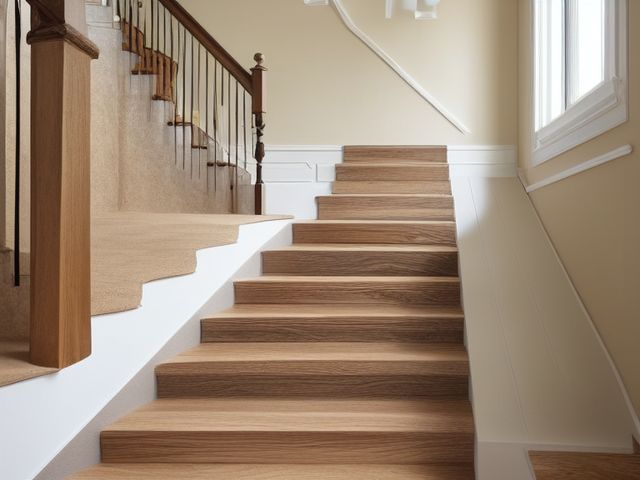

Stair Landing micro zone
The Stair and Floor Path
The treads, runner, handrail and lighting that carry every person in the house between floors, several times a day, often with their arms full.
One session: 30-45 min. most of it in Safety, walking the flight tread by tread and fixing what you find

What done looks like
Every tread bare from nose to riser, including the bottom three steps that usually stage things. The runner lies flat with no lifted corner at the turn. The handrail runs unbroken and unobstructed from the top newel post to the bottom, with no bag, coat or dog lead hung on either post. Both switches work, so the top step and the bottom step are lit before you take them.
Check these before you start
- FallA lifted runner corner, a loose handrail bracket, or a dead bulb over the top step. Each one is a fall on the hardest surface in the house, and they tend to arrive together, at night.
- Fall, cut, or crushCarrying a laundry basket or a box you cannot see over means going down blind with no free hand for the rail. Anything parked on the bottom three steps is invisible to that person.
- Water and electricityChanging the bulb over the stairwell means standing high on a flight with a live fitting overhead. Switch the light off at the wall, let a hot bulb cool, and work from the landing on a properly footed ladder rather than balancing on a tread.
The six passes, in order
Work them in this order. Sorting after you have arranged things means arranging things you were about to remove.
Sort
Decide what stays. Everything else leaves the zone now.
Nothing lives on stairs. Clear the folded laundry, the shoes, the box that has sat on step four since the weekend, all of it in one trip, and put each thing where it belongs on its own floor rather than restaging it on the landing above.
Straighten
Give what stays a home, placed where the hand actually reaches.
The one thing that must stay reachable here is the handrail, so strip both newel posts of coats, bags and leads. If a stair gate is fitted, set the top gate to swing away from the flight and never out over it.
Shine
Clean it, and use the cleaning to inspect what you cannot see when it is full.
Vacuum the tread noses, the crevice where each tread meets its riser, and along the stringer where a runner is tucked. That trapped grit is what polishes a runner slick under a stocking foot. Wipe the handrail its full length, including the underside your fingers wrap around.
Safety
Make the zone safe for everybody who uses it, including the shortest person.
Walk the flight slowly and test as you go: press each tread nose for movement, tug each runner edge, and grip the rail hard at top, middle and bottom to find a loose bracket. Then stand at the bottom in the dark and look at the top step, and stand at the top and look at the bottom. A burnt-out bulb over a top step is the single most dangerous thing in this room. Find it, and fix it now.
Standardize
Write down the best way you know today, so it survives you forgetting.
The standard is one sentence anyone in the house can check: bare treads, full width, lit at both ends, rail clear. Photograph the empty flight from the bottom and put that picture where the staging happens, which is almost always beside the bottom step.
Sustain
Attach the reset to something that already happens, so it keeps itself.
The last person up at night takes the flight with one hand on the rail and carries whatever is sitting on a tread. If their hands are too full to hold the rail, that is the signal to make two trips.
The runner that has already lifted once
If your stairs have a runner and one corner has lifted or one rod has worked loose, you have almost certainly pressed it back down and carried on. That is the decision you keep deferring, and it is the wrong shape, because a runner that has lifted once has already told you what it will do again. Choose today between two honest options and refuse the third. Either refix it properly along its whole length, with rods or full-width tape on every tread rather than a patch on the one failed corner, or take it up entirely and live with bare treads. Bare wood you know is slippery beats a runner you have quietly stopped trusting, because you adjust your step for the first and not the second. The one thing you may not do is press it down again and wait.
Cleaning it properly
Top to bottom and rail first: handrail, posts and balusters, then the treads, the risers, the runner and its tucked edges, and the landing floor last. The step almost everyone skips is the crevice where each tread meets its riser, and that grit is what turns a runner slick.
Inspect as you clean. Cleaning is the only time you see the zone empty, so use it.
- As you vacuum each tread nose, notice any tread that gives or flexes underfoot, and flag it.
- Note any runner corner that has lifted as you clean the edges, and any worn strip on a nose where the pile has gone thin.
- While you wipe the rail's length, notice any bracket that has worked loose or any section that turns slightly in its fixing under the cloth.
- While you clean the treads under each fitting, flag a bulb over the top or bottom step that is dim, flickering, or dead, because that is the most dangerous fault this room can hold.
- Watch the stringer and skirting for a cracked or springy board, and the switch plates for warmth or discolouring as you wipe them.
The standard that keeps it fixed
Bare treads at full width, runner flat and fixed the whole way, handrail clear from newel to newel, and working light at both ends.
Reset trigger. When you head up to bed, you go with a hand on the rail and nothing left standing on a tread behind you.
The rest of the stair landing, in working order
Each of these is one session on its own. Finish this zone before you open the next.
- The Landing Surface or Console
- The Wall and Display Zone
- The Stair and Floor Path, you are here
The Stair Landing in full, with what each of the 3 zones is for
Related reading
- What is 6S?
- This zone's safety pass, in full
- Is one spot in this zone always the one you skip?
- Why this zone gets messy again
- Decluttering vs. organizing
- Before you buy storage for this zone
- Still does not fit, even after the honest count?
- Does something in this zone actually get used somewhere else?
- Stuck on one item in this zone?
- Written the standard, but nobody else follows it?
- Does everyone in the house agree what "done" looks like here?
- Does more than one person use this zone?
- Found a duplicate of something in this zone?
- Why the standard above names one home per category
- Is the everyday item in this zone actually the easy one to reach?
- Not sure whether to keep something in this zone?
- Does this zone keep running out of something?
- Started this zone and stalled partway through?
- Have you stopped noticing the clutter in this zone?
When you want it off the screen
Carry The Stair and Floor Path into the room
The method above is complete and free. The Whole House Print Pack puts The Stair and Floor Path and the other 113 micro zones on 684 printable cards, so the steps you just read are not stuck behind a phone screen while your hands are full.
The Print Pack, 19 dollarsJust this zone, 4 dollarsOr draw a card free
The Stair and Floor Path on its own is 4 dollars for 6 cards. All 114 micro zones is 19 dollars for 684. The whole house is the better buy; the single zone is here so you can take only what you are working on.
If The Stair and Floor Path keeps fighting back, the real problem usually sits somewhere else in the room. A one hour virtual consult is 250 dollars: we find the function, the friction and the root cause together, and you keep a written standard for the space. See what a consult covers.